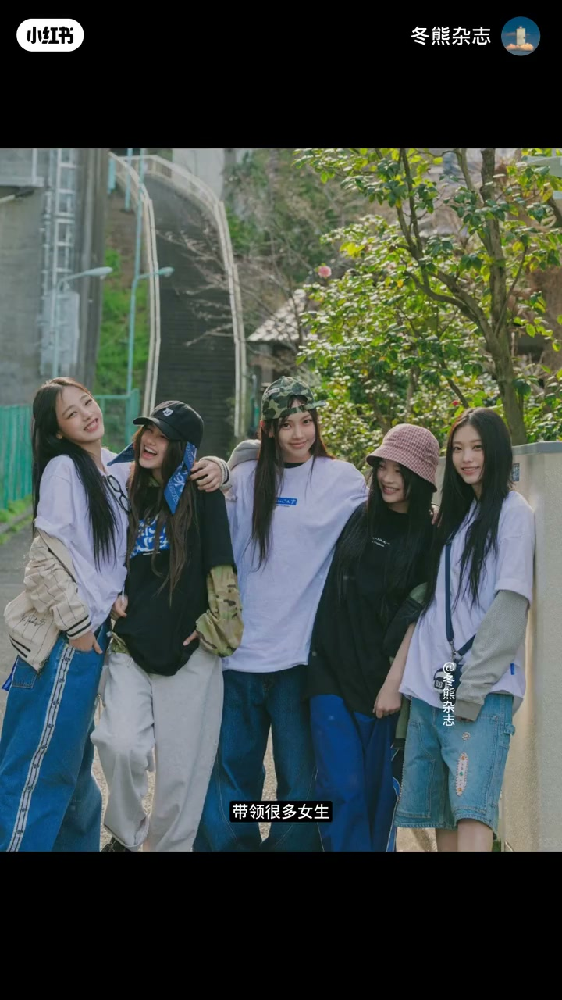
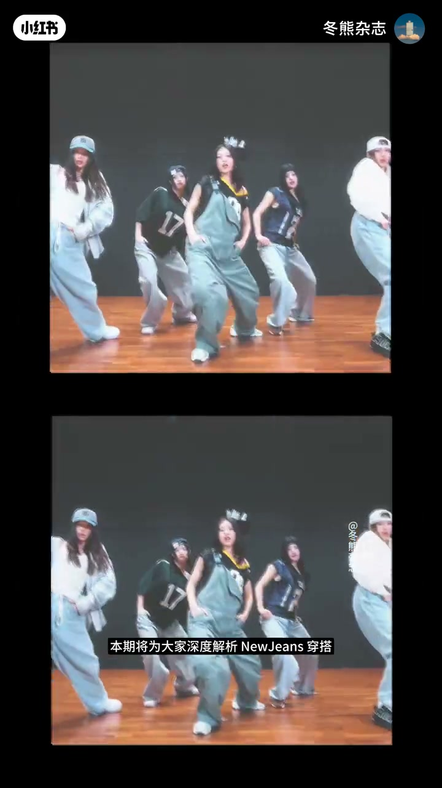
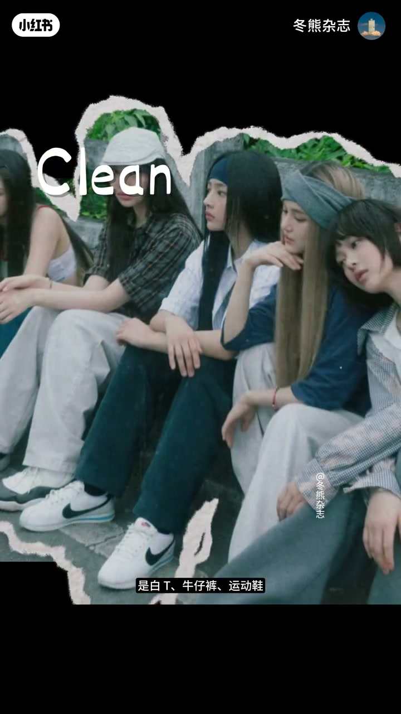
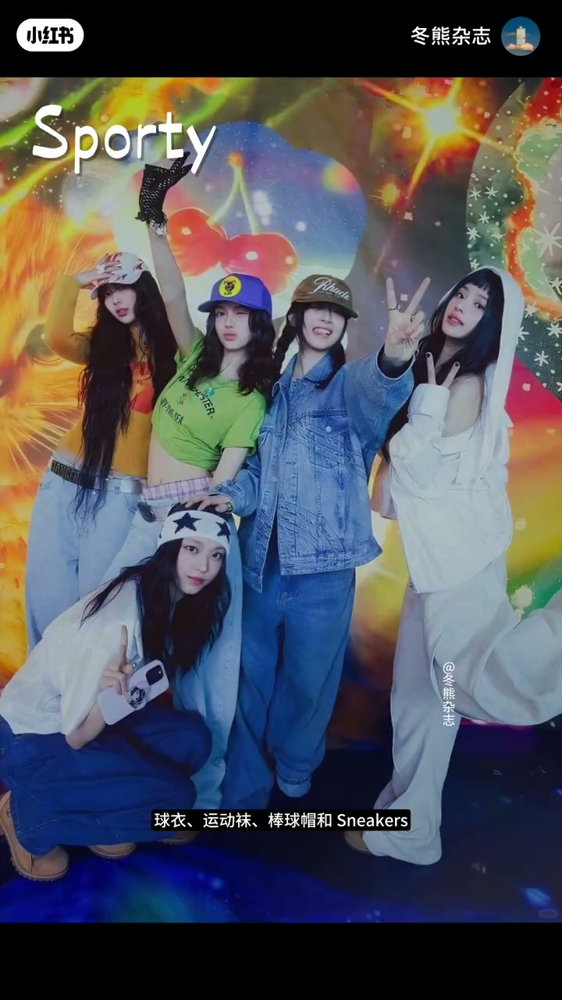

内容要点
NewJeans 淡出荧幕后，那份「鲸味」仍被反复怀念。冬熊杂志把它定义为东亚女孩迟来的青春期穿搭范本：五小妹用宽松、自然和不精致，带许多人跳出「东亚白幼受」与「欧美紧身辣妹」的单一审美。本期从视觉基调、风格基底与混搭手法三层，拆出一套普通女生也能复刻的鲸味公式。
知识结构
怀念独一份鲸味；跳出白幼受/紧身辣妹定式；定位为东亚女孩迟来的青春气范本，将拆 Clean & Fresh、三层基底与混搭。
Clean=不过度攻击视觉的干净（白T/牛仔/运动鞋/宽廓形/自然发与像素感妆）；Fresh=不刻意营业，像放学去便利店、刚从操场跑出来；本质是不用力证明自己的青春感。
Gen Z 给松弛（宽卫衣、肥牛仔裤、随手运动鞋）；Preppy 给校园校服感而非女团制服；Sporty 给球衣袜帽与会跑起来的鲜活。
真正独一份在于跨风格叠穿：校园混运动、少女感混 Oversize/Streetwear；核心是「还没被定义完成」的状态，松弛鲜活自由才是青春本身。
鲸味不是「穿得多时尚」，而是 Clean & Fresh 的不用力青春感，加上 Gen Z / Preppy / Sporty 三层底盘，再用实验性混搭保持未定型。复刻重点在状态与混搭，而不是堆女团制服感。
00:00-00:36鲸味：东亚女孩迟来的青春气范本
开场用「是谁好久不见」勾起对 NewJeans 独一份鲸味的怀念。五小妹的出现，带领很多女生跳出东亚白幼受和欧美紧身辣妹的单一审美定式，自然散发出松弛不做作、满是元气的少年青春感。
常说 NewJeans 开创了独一份鲸味穿搭；冬熊更愿定义为「东亚女孩迟来的青春气穿搭范本」。本期将从视觉基调、风格基底和搭配手法三个角度，拆出普通女生也能复刻的公式。


00:36-01:12Clean & Fresh：干净，但不营业
Clean & Fresh 是鲸味最核心的视觉基调。Clean 是一种不会过度攻击视觉的干净：白 T、牛仔裤、运动鞋，宽松廓型，自然头发和像素颜一样的妆感。
Fresh 则体现在不刻意营业——她们不像已经完成妆造、随时等待被观看的偶像，更像放学后一起去便利店、刚运动完从操场跑出来的女高中生。本质是一种不需要用力证明自己的青春感：原来青春本来就该是宽松的、自然的、不精致甚至有一点乱乱的。

01:12-01:52三层基底：Gen Z、Preppy、Sporty
支撑 Clean & Fresh 的，是三层典型风格基底。Gen Z 给出最核心的松弛感：宽松卫衣、肥大牛仔裤、像随手抓来的运动鞋——不太规整，正是随性与自由。
Preppy 负责校园青春气息：穿的从来不是女团式制服，而是真正属于青春气的校服感，让人立刻联想到教室、操场和放学后的夏天。Sporty 则是最有生命力的一层：球衣、运动袜、棒球帽和运动鞋，不是静态被陈列的漂亮，而是随时会笑着跑起来的鲜活。

01:52-02:47实验性混搭：未被定义完成的青春
真正让鲸味独一份的，是实验性混搭：把不属于同一种风格的元素叠穿——校园感里混进运动元素，或在少女感里加入 Oversize 与 Streetwear。这不等于乱穿，核心是一种「还没被定义完成」的状态，而这恰恰是新鲜又自由的青春本身。
所以鲸味从来不是穿得有多时尚，而是一种不被定义的少女感：有一点笨拙、混乱、不按规则；不急着修饰成标准精致的大人，而是让松弛、鲜活和自由重新变回青春本来的样子。片尾预告后续会分享鲸味风格的设计师品牌与店铺。
完整转录（83段）
以下文本由 Whisper medium 模型自动转录，可能存在少量识别误差，已尽可能修正。
是谁好久不见
New Jeans却依旧在怀念那独一份的精味
是谁好久不见
New Jeans却依旧在怀念那独一份的精味
吴小妹的出现
带领很多女生跳出了东亚白用受和欧美紧身辣妹的单一审美定式
带领很多女生跳出了东亚白用受和欧美紧身辣妹的单一审美定式
自然而然散发出松弛不做作满是元气的少年青春感
自然而然散发出松弛不做作满是元气的少年青春感
一直都说New Jeans开创了独一份的精味穿搭
而我更愿意把它定义为
东亚女孩迟来的青春气穿搭范本
大家好我是小熊
本期将为大家深度解析New Jeans穿搭
从视觉基调、风格基底和搭配手法三个角度
从视觉基调、风格基底和搭配手法三个角度
拆解出一套普通女生也能复刻的精味穿搭公式
拆解出一套普通女生也能复刻的精味穿搭公式
Clean & Fresh是精味最核心的视觉基调
Clean & Fresh是精味最核心的视觉基调
New Jeans的Clean是一种不会过度攻击视觉的干净
是白T、牛仔裤、运动鞋
是宽松的阔型
自然的头发和像素颜一样的妆感
而他们的Fresh则体现在不刻意营业
而他们的Fresh则体现在不刻意营业
吴小妹不是已经完成妆造
随时等待被观看的偶像
反而更像放学后一起去便利店
刚运动完从操场跑出来的女高中生
精味Clean & Fresh的本质
其实是一种不需要用力证明自己的青春感
他们重新让大家意识到
原来青春本来就应该是宽松的
自然的、不精致、甚至有一点乱乱的
而支撑起Clean & Fresh的
则是New Jeans身上三层非常典型的风格基底
则是New Jeans身上三层非常典型的风格基底
Gen Z、Preppy和Spartie
Gen Z给了精味最核心的松弛感
宽松卫衣、肥大牛仔裤
像随手抓来的运动鞋
这种不太规整的状态
正是Gen Z式的随性与自由
Preppy则负责校园青春气息
Preppy则负责校园青春气息
New Jeans穿的从来不是女团式制服
而是真正属于青春气的校服感
会让人立刻联想到教室、操场
和放学后的那个夏天
Spartie则是五小妹身上最有生命力的一层
Spartie则是五小妹身上最有生命力的一层
球衣、运动袜、棒球帽和Sneakers
不是静态被陈列的漂亮
而是一种随时会笑著跑起来的鲜活
而是一种随时会笑著跑起来的鲜活
但真正让精味变得独一份的
其实是实验性的混搭方式
把不属于同一种风格的元素混搭叠穿
比如在校园感里混进运动元素
或者在少女感里加入Oversize和Streetwear
这种颇具实验性的穿搭
并不等于其中一幅
其核心是一种还没被定义完成的状态
而这恰恰就是新鲜又自由的青春本身
而这恰恰就是新鲜又自由的青春本身
所以精味从来不是穿得有多时尚
而是一种不被定义的少女感
就像青春期里那些还没定型的审美和情绪
就像青春期里那些还没定型的审美和情绪
有一点笨拙、有一点混乱
也有一点不按规则
他们不会急著把自己修饰成标准精致的大人
而是让松弛、鲜活和自由
重新变回了青春本来的样子
这场属于东亚女孩迟来的青春期
让我们怀念至今
那本期就先到这里
希望每个人心中都能保留一份属于自己的鲜活的青春期
希望每个人心中都能保留一份属于自己的鲜活的青春期
后续也会给大家分享一些精味风格的设计师品牌与店铺
后续也会给大家分享一些精味风格的设计师品牌与店铺
感兴趣拜托持续关注,很快再见